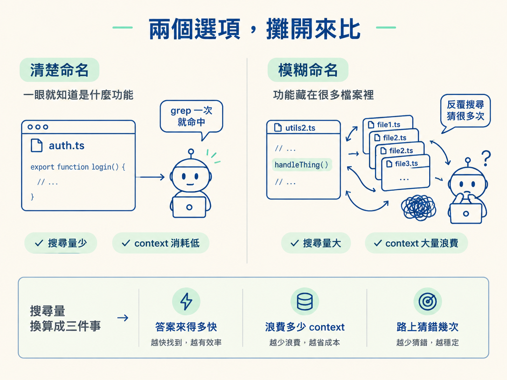
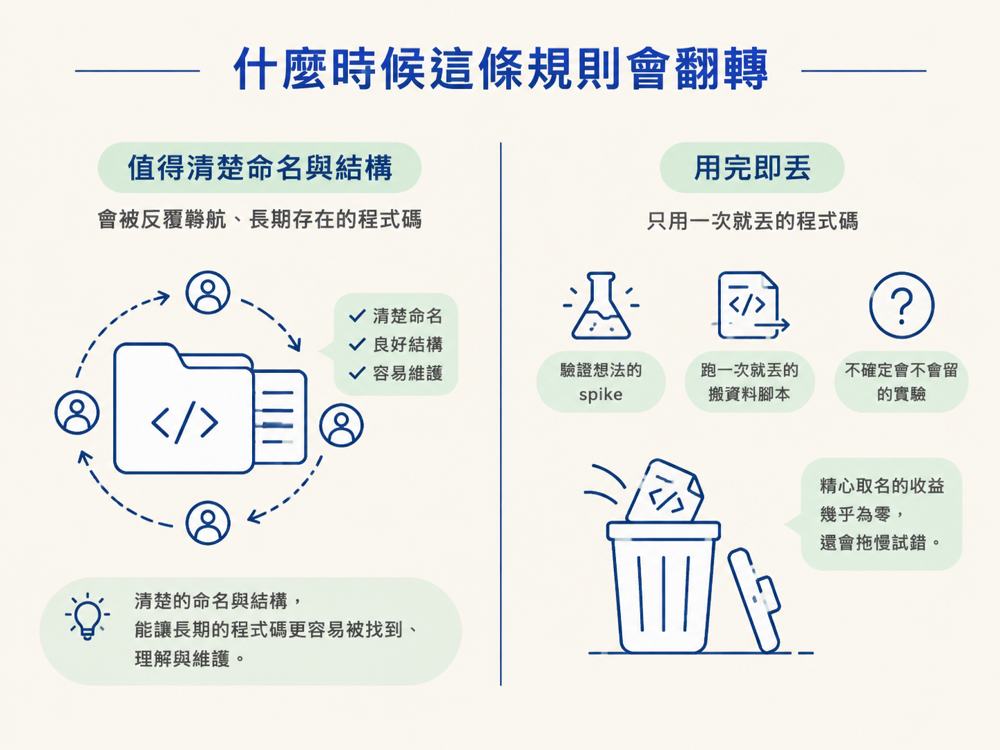

判斷什麼時候值得為 agent 投資清楚的命名與可預測的結構、什麼時候不必，並用「auth.ts 對 utils2.ts」的對比說明這如何換成更少的搜尋與更少的 context 消耗。
上一節追完那條搜尋路徑後，你應該會冒出一個很實際的念頭：既然 agent 每次都要靠搜尋才能認路，那我是不是可以把路鋪平一點，讓它少搜幾次？
但這個念頭一出現，就有兩股力量開始拉扯。一邊是：取名字要花時間，安排結構要花心思。如果只是自己寫個小東西、趕著把它跑起來，把時間花在取名上似乎很奢侈。另一邊是：一旦 agent 要接手，那些含糊的名字和隨處亂放的功能，會讓它多搜好幾次、多開好幾個檔案、多燒掉一堆 context。
所以這一節不會告訴你「命名很重要」這種口號。它要給你的是一條清楚的判斷線：什麼情況該投資，什麼情況可以放過。
先把兩種做法並排，差別才看得出來：
| 做法 | agent 要付的成本 | 你當下的成本 | 適合什麼 |
|---|---|---|---|
| 清楚命名＋可預測結構 | 一次 grep 就命中，讀得少、猜得少 | 寫的時候多想幾秒 | 會被反覆導航、長期存在的碼 |
| 通用命名＋隨處放 | 更多搜尋、更多開檔、更多猜測 | 當下寫得快 | 一次性、不會再看第二次的碼 |
課程用兩個很具體的檔名來對照這兩種世界。如果驗證帳號的邏輯放在一個叫 auth.ts 的檔案裡，agent 搜一次就找到了。但如果同樣的邏輯放在一個叫 utils2.ts 的檔案裡，裡面匯出一個叫 handleThing 的函式，agent 就得多做很多事：更多次搜尋、開更多檔案、做更多猜測、燒掉更多 context，只為了找到一件你早就知道在哪裡的東西。
把兩者放在一起看，差別就很具體：
// lib/auth.ts —— 檔名就是功能的名字
export function verifyCredentials(email: string, password: string) { … }
// lib/utils2.ts —— 檔名與函式名都看不出在做什麼
export function handleThing(input: string) { … }
這不是風格偏好的層級。清楚命名與可預測結構，直接減少了 agent 必須做的搜尋量。而搜尋量換算下來，就是三件事：答案來得多快、浪費掉多少 context、路上猜錯幾次。

要決定值不值得，你可以問自己三個問題：
三題的答案如果是「會、會、可以」，那你幾乎沒有理由不投資。因為這份收益會在每一次 session 裡重複兌現，agent 用幾次就賺幾次。
但只要有一題的答案是「不會、不會、很勉強」，就該重新考慮。別為了命名把交付卡住。
反過來說，「清楚命名」在什麼時候其實是浪費？答案是：當這段碼是一次性的。一個暫時拿來驗證想法的 spike、一個跑一次就丟的搬資料腳本、一個你自己都不確定會不會留的實驗。這種碼沒有「反覆導航」這回事，你為它精心取名的收益幾乎是零，甚至會拖慢你試錯的速度。

還有一種情況：命名問題的背後其實是架構問題。如果一個檔案之所以叫 utils2.ts，是因為整個專案的功能都糊在一起，那你要解的不是「幫它改個名」，而是「把職責拆開、放回該放的位置」。這種時候改名字只是治標，真正該做的是重新切分結構。那是更大一層的工作，不屬於這一節說的順手投資。
先問：這段碼會被反覆找、活很久嗎？會，就把命名與結構一次做清楚；只是用完即丟，就別為它多花力氣。判斷的關鍵是「它會不會被重新導航」，不是「名字聽起來專不專業」。
還有一個念頭值得帶走。課程提醒：你現在寫碼的對象已經不只人了。你是在為一個靠搜尋認路的東西寫碼，它像一個第一天到職的新人。差別只在於，它每個 session 都從零開始，永遠不會因為待久了就熟悉你的專案。所以你把路鋪平，換到的不只是它快一點，而是你自己每一次都少付一點搜尋與 context 的成本。
命名與結構是給 agent 的效能槓桿，不是風格問題。清楚命名能讓它一次 grep 命中；通用命名會逼它多搜、多開檔、多猜、多燒 context。該不該投資，就問兩件事：它會不會被反覆導航、會不會活很久。會，就一次做清楚；用完即丟，就別勉強。記得你是在為一個每個 session 都從零開始、靠搜尋認路的「新人」寫碼。
到這裡，這個 node 的四步就走完了：它只看見載入的東西、它沒有索引、它靠搜尋認路，而你的命名決定它要搜多久。
下一步很單純：拿這個判斷回頭檢查你自己專案裡的幾個檔名。看看哪些是「一次就命中」的 auth.ts，哪些是逼人搜尋的 utils2.ts。